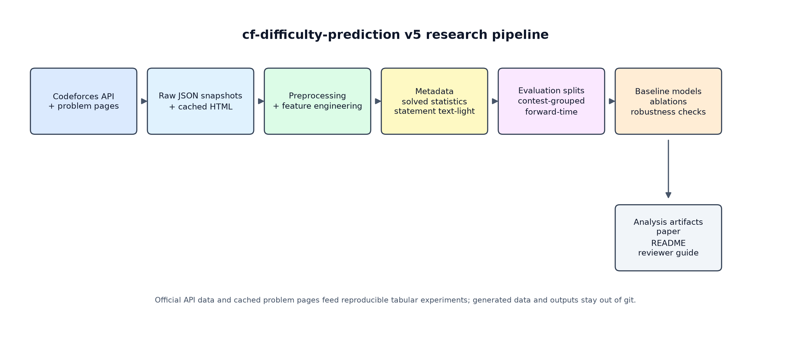
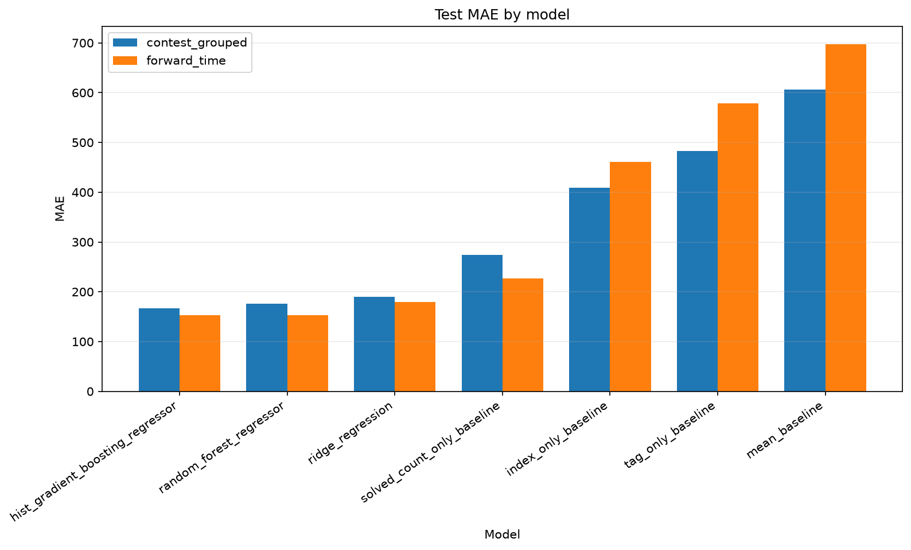
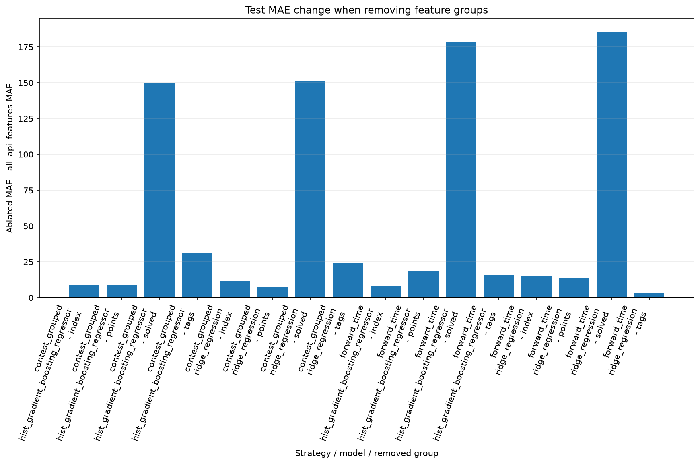
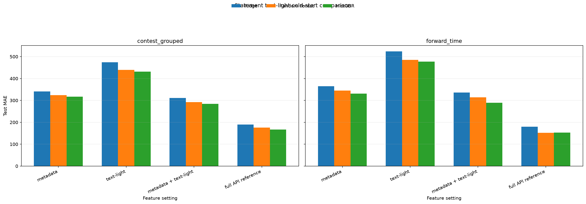
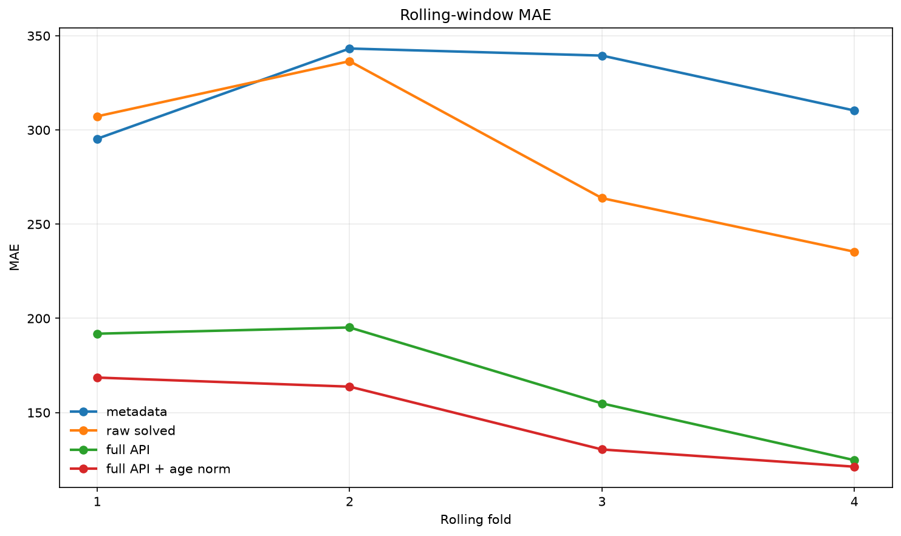
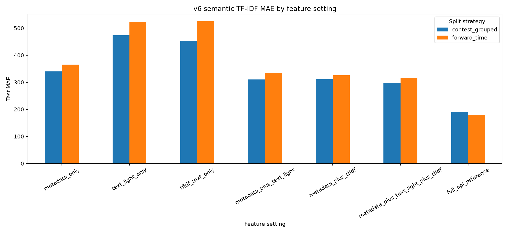
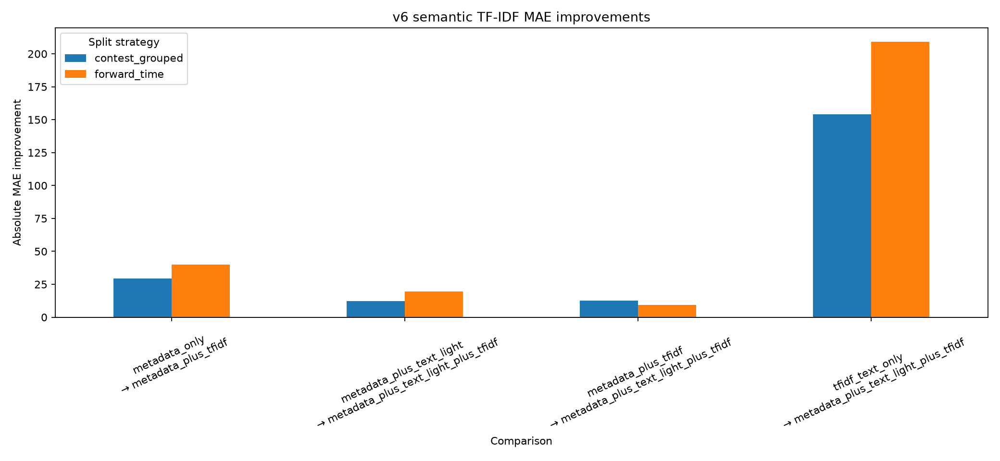

Public correction · 2026-07-10
Historical metrics are retrospective, not confirmatory.
An audit found a split-configuration mismatch and test-based winner selection. Read the public erratum and the frozen future-test protocol before interpreting the legacy numbers below.
Historical v5 release · retrospective
Codeforces Difficulty Prediction
A reproducible ML study of post-publication and cold-start problem difficulty prediction.
Research question
How well can Codeforces problem difficulty be predicted across post-publication and cold-start settings using public metadata, solved-count statistics, exposure-aware features, and lightweight problem-statement structure features?
Key results
Post-publication is strong. Cold-start is the hard part.
Contest-grouped full API
MAE 166.9 within ±200 = 69.7%Forward-time full API
MAE 152.5 within ±200 = 71.2%Cold-start metadata only
317.1 / 331.4 MAEMetadata + text-light
284.0 / 289.1 MAEStatement text-light improvement
33.0–42.3 MAEStatement feature coverage
99.3% 10,906 / 10,979 parsedFigures
Five views of the final v5 pipeline.





Interpretation
Full API is not the same problem as cold-start.
Post-publication
Full API uses solved-count statistics after problems have had time to accumulate accepted submissions. It is powerful, but it also reflects exposure, age, popularity, and participation.
Cold-start
Cold-start excludes solved-count behavior. This v5 site reports metadata/statement cold-start, not strict pre-contest cold-start, because official tags may not always be available before contests.
v6 Semantic Statement Text Modeling
Classical TF-IDF adds semantic cold-start signal, but does not replace v5.
v6 is a separate semantic statement-text extension. It tests whether normalized problem-statement text, represented with TF-IDF, improves cold-start prediction beyond metadata and v5 lightweight statement-structure features.
The v6 extension uses classical bag-of-words TF-IDF, not BERT, transformers, embeddings, LLMs, or deep semantic understanding. TF-IDF alone is weak, but metadata + TF-IDF improves over metadata only, and metadata + text-light + TF-IDF improves over metadata + text-light.
The improvement is larger on forward-time validation than on contest-grouped validation. This remains metadata/statement cold-start rather than strict pre-contest prediction, because tags may be post-contest metadata. The v6 full_api_reference is a ridge-based internal comparison and does not replace the canonical v5 full API benchmark.
Contest metadata + TF-IDF
340.5 -> 311.1 MAE vs metadata onlyForward metadata + TF-IDF
365.4 -> 325.4 MAE vs metadata onlyContest text-light + TF-IDF
310.6 -> 298.5 MAE improvementForward text-light + TF-IDF
335.8 -> 316.2 MAE improvement

Illustrative browser demo only
Heuristic sliders for intuition, not the trained research models.
This browser demo is heuristic and does not run the trained research models. It is an explanatory aid only and is not part of the reported experiments.
Limitations
Good numbers, conservative claims.
- Solved count is not pure difficulty; it is shaped by exposure and time.
- Statement text-light features are approximate HTML-derived structure features.
- No deep NLP, semantic embeddings, or LLM-based statement understanding in v5.
- v6 TF-IDF is classical bag-of-words text modeling, not deep algorithmic understanding.
- v6 is metadata/statement cold-start and does not replace the historical v5 benchmark.
- The evaluation is Codeforces-only.
- Cold-start prediction remains harder than post-publication prediction.
Links